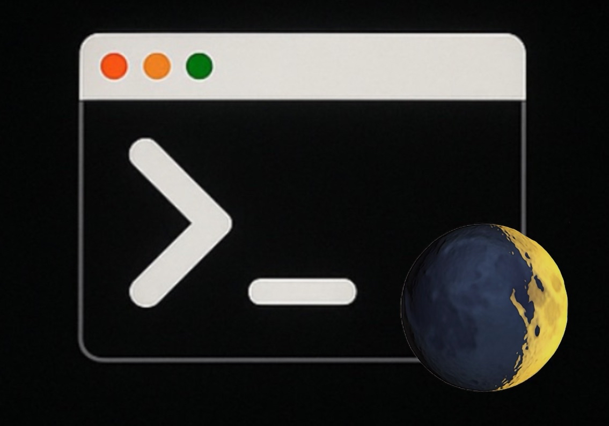

DIMINISHED_CELESTIAL 1.0.0
Our fastest CLI model yet , it may lack some features but its highly optimised for speed and simplicity.
JUST WHITE TEXT AND NOTHING ELSE , have relaxing convos with ur personality coustomised companion, and yes the read file feature is still avalable in this model ,the only downside that it doesnt have mod compatability .
For this noble sacrifice u get even more speed
